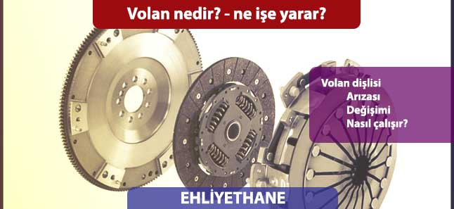

Kökeni Fransızca bir kelime olan Volant kelimesinden gelen Volan dişlisi, içten yanmalı motorlarda, marş motorundan üretilen hareketi (tork) motorun devrini başlatan ve sürdüren bütün mekanizmaya aktaran ve düzenli işleyişini kontrol edilebilir hale getirmeye yarayan önemli bir parçadır.
Volan dişlisi marş motorunun dişlisi ile entegre biçimdedir. Araçta marşa basıldığı an, marş motoru devreye girer ve marş motoru dişilisi hareket ederek volan dişlisi ile var olan bağlantısı nedeniyle üretilen torku buraya aktarmaktadır. Hareketi devralan volan dişlisi bundan sonraki süreçte bu hareketi krank miline aktarır. Volan merkezine entegre halde çalışan krank mili, hareket etmesiyle birlikte motordaki devir daimin kilit noktası olan pistonları aşağı ve yukarı yönlü hareket ettirir. Bunun akabinde motorun ateşleme ve yakıt sistemi kendiliğinden devreye girerek motorun kusursuz bir şekilde işlemesi sağlanır. Motor çalışmaya başladıktan sonra, pistonlar aşağı yukarı hareket ederek, bu defa krank milini, krank miline sabit olan volan dişlisini çevirir. Volan dişlisinin debriyaj balatasına bakan zımparayı andıran yüzü, manuel şanzımanlı araçlarda debriyaj pedalına basıldığında ayrık, pedal bırakıldığında ise şanzıman balatasına yapışır ve bu bağlantı hareketin şanzımana ve sonrasında tekerleklere aktarılmasını sağlar. Otomatik şanzımanlı araçlarda ise debriyaj balatası olmadığından tekerleklere hareketi aktarma görevini tork konvertörü yerine getirmektedir.
Volan dişlisi neden bozulur?
Volan dişlisi bütün motor mekanizması içerisinde kritik bir öneme sahiptir. Bu önem nedeniyle motorun devrinin gerçekleşmesinde üstlendiği görev, onu bu mekanizmanın en önemli parçası yapmaktadır. Volan dişlisinin bozulması, marş motoru dişlisinden sağlanan bağlantısının zamanla aşınarak hareket aktarma kabiliyetinin zayıflaması veya dişlilerin zamanla eskimeye bağlı olarak kırılması şeklinde meydana gelebilir. Genel olarak volan dişlisinin en sık rastlanan bozulma sebepleri, araç çalışırken marşa basılması, aracın vurdurularak çalıştırılması, marş dinamosuna bağlı bozulmalar, eskimeye bağlı bozulmalar sayılabilir.
Volan bozulursa ne olur ?
Volan dişlisi arızasında aracın performansı büyük ölçüde etkilenir. Çünkü arızalı volan tork aktarma görevini olması gerektiği gibi yerine getiremez. Bu durumda araç özellikle düşük devirlerde aşırı cansız olur. Volan dişlisi arızalı olan araç yokuşlarda hissedilir bir biçimde performans kaybı yaşamaktadır. Çok sık karşılaşılan durumlardan biri de volan dişlisinin bozulması halinde motorun gaz hareketlerine anormal tepkiler vermesidir.
Volan dişlisi nasıl değiştirilir?
Aracın şanzıman ve motorun birleştiği noktada bulunan volan dişlisi, arızalanması durumunda değiştirilerek yenisi takılır. Değiştirme işlemi yapılırken şanzıman indirilir yani yerinden sökülür. Bu işlemde şanzımanın içi açılmaz. İndirilen şanzımanın üzerinde bulunan volan dişlisi, bağlantı noktalarından araçlar yardımıyla sökülür ve yenisiyle değiştirilir. Oldukça zahmetli ve uzun sürmesi nedeniyle volan dişlisi değişimi pahalı bir işlemdir. Aynı zamanda hassasiyet gerektiren bir işlem olduğundan, sadece yetkili servislerde ve güvenilir noktalarda gerçekleştirilmesi önerilir.